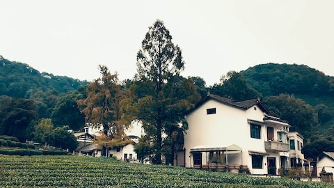
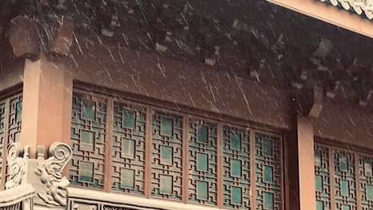
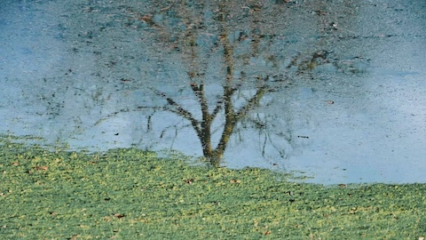
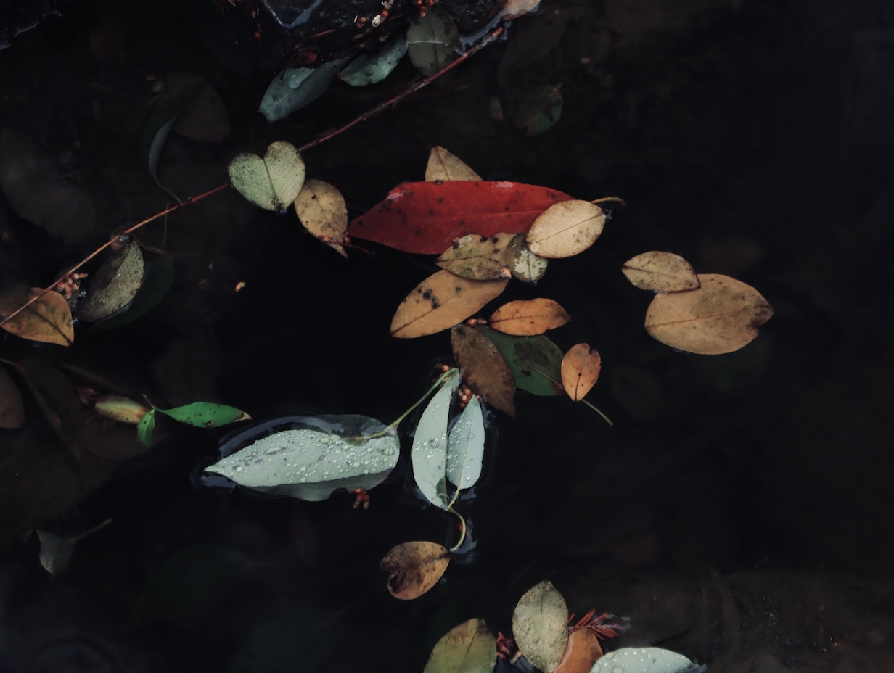
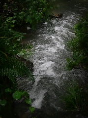
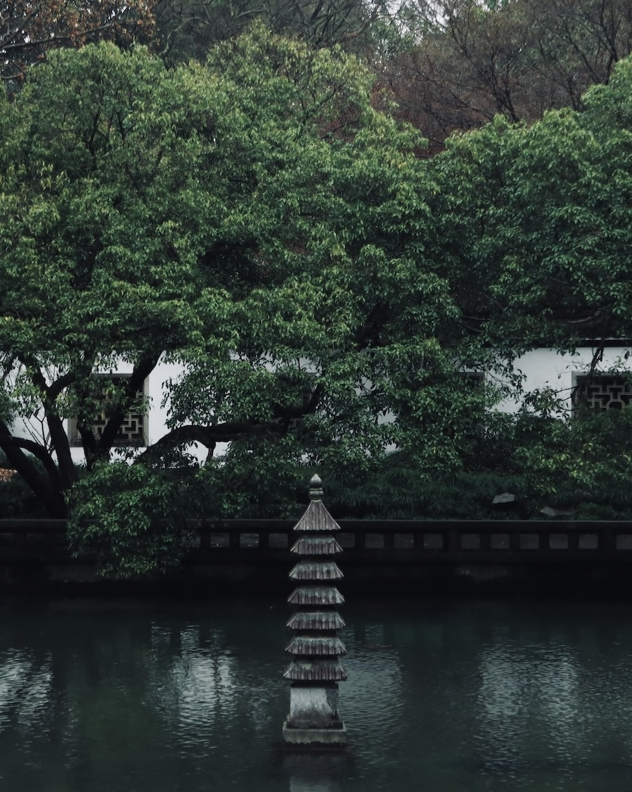
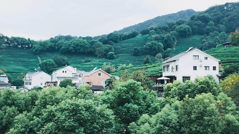
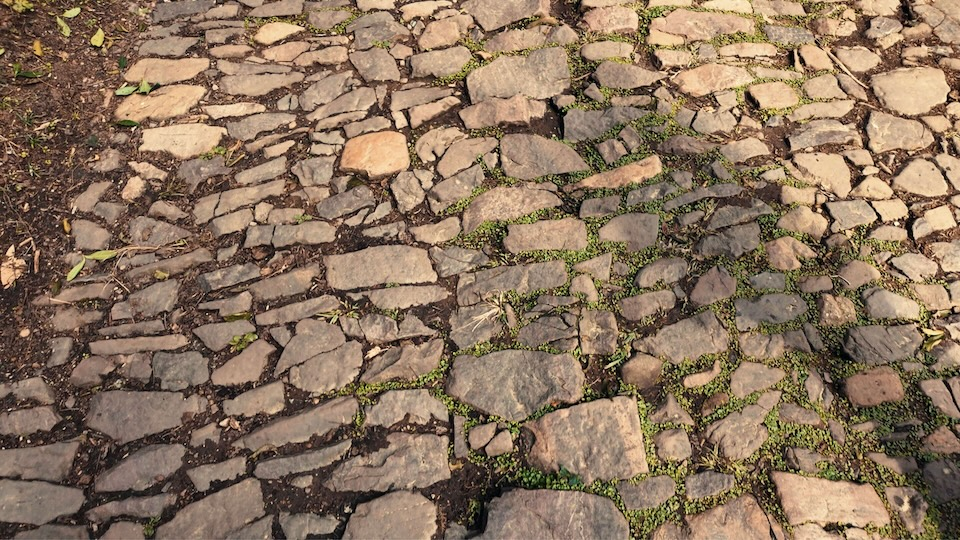
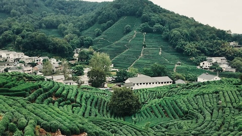
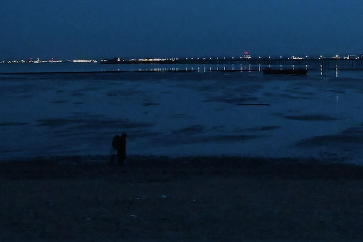

沐林空间
百年日月闲中度，八万尘劳静中消。
绿水光中山影转，红炉焰上雪花飘。
百年日月闲中度，八万尘劳静中消。
绿水光中山影转，红炉焰上雪花飘。
沐风
01 / VERSE钟鼎山林各天性，观月赋舒风。


观山向我，顺水而行，
抱朴和风，万物皆我。
拂往
02 / VERSE
往事留痕在，清风不系之。
用心若镜，圣物不伤，
照物不染，物过不留。

性空
03 / VERSE逐梦百窗，轻盈自转。
风尘洗尽心犹赤，
归来依旧。


云舒
04 / VERSE云心无我，
云我无心。
歌悠
05 / VERSE短笛长歌独倚楼，
万事尽随风雨去。

岁时之间，当若不系之舟，
随去住风。
观心
06 / VERSE
禅叙
07 / VERSE茶境似水，
往事轻灵。


村酒
08 / VERSE
唯有沧澜月，
犹似儿时明。
天涯何处是吾乡，
蝉鸣昨日去堂堂。

山声
09 / VERSE
草木皆本心，
木鱼唤长醒。
山中何事？鸟鸣苍梧，
溪边饮茶。
泊舟
10 / VERSE
原创诗文与影集